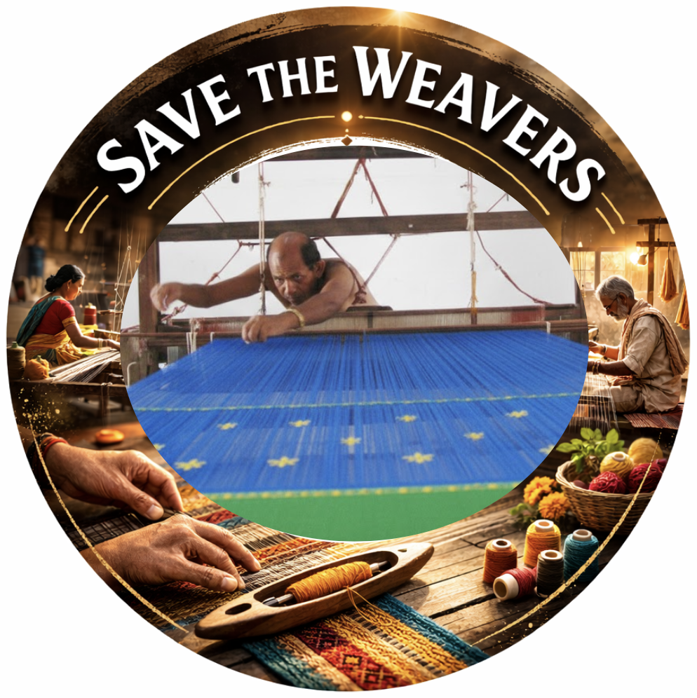
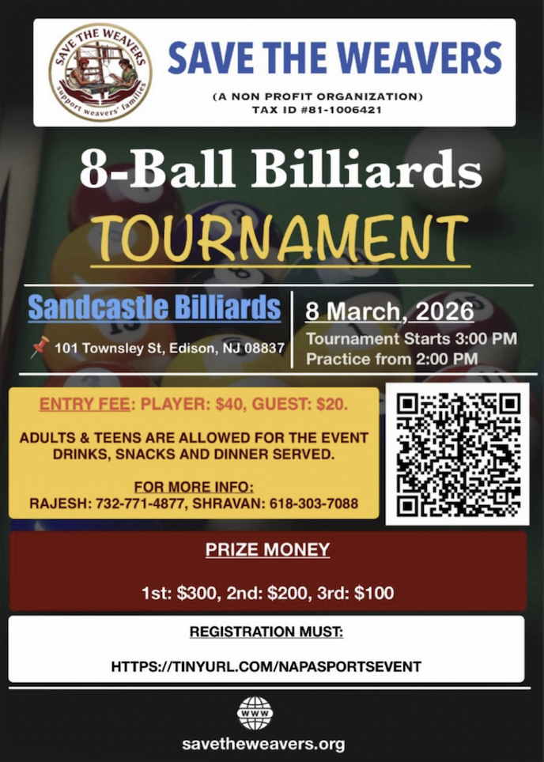

Save The WeaversPreserving India's Timeless Weaving Heritage
Millions of skilled hands weave the fabric of India's culture — yet they struggle to weave a better tomorrow for their own families. Join us to change that.

India's weaving community is one of the largest skilled communities in the world. Weavers craft the cotton and silk sarees, zari works, bed sheets, lungis, patches, and the rich variety of cloth that define the cultural identity of our nation.
Yet over 70% of these artisans still operate on traditional handlooms — wooden maggam looms passed down through generations. The man of the household spends long hours at the loom while his wife prepares threads and manages the household.
The relentless competition from industrial mills has driven wages to near-subsistence levels. Children of weavers are often forced to drop out of school because their families cannot afford books, fees, or transport.
Save the Weavers exists to change this reality.
A weaver from telugu states
Emergency financial aid and food support to weaver families during lean periods, ensuring no family suffers for preserving our cultural heritage.
We train women in tailoring and gift them sewing machines — creating a second income stream and economic independence for the household.
We sponsor school fees, books, and digital tools for children of weavers — giving every child the same chance to dream and succeed.